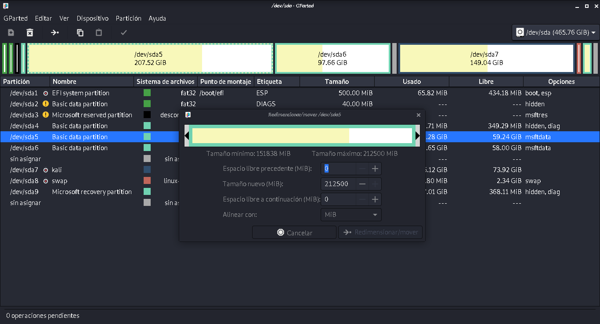
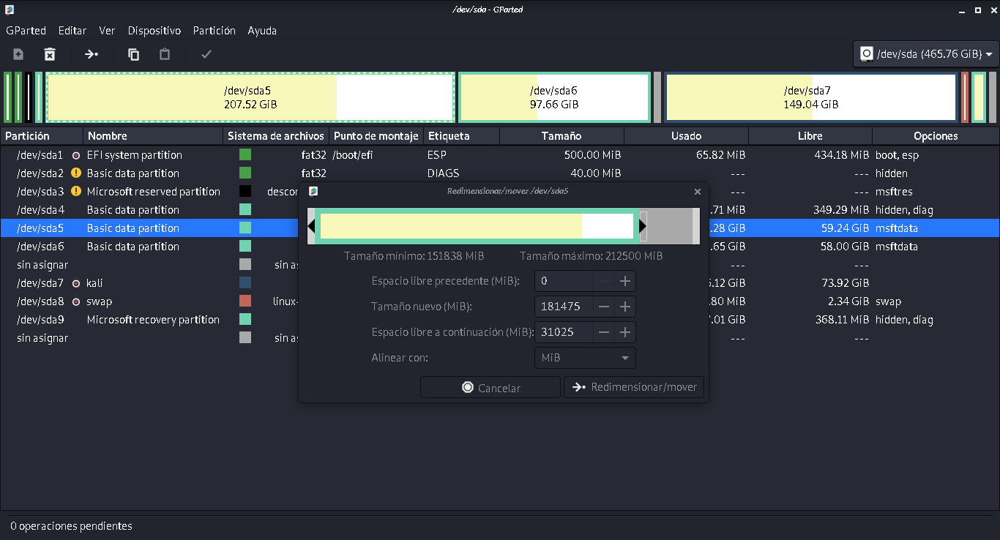
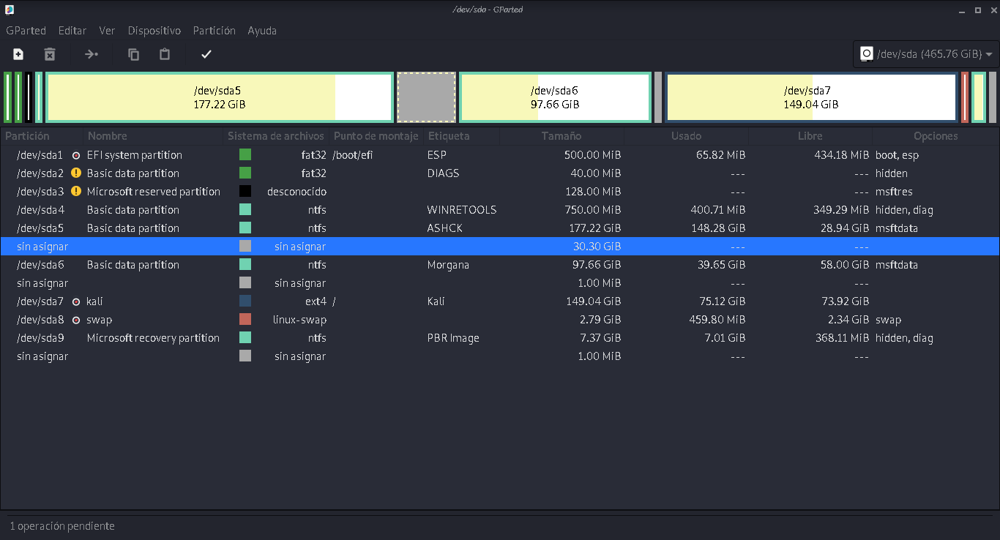
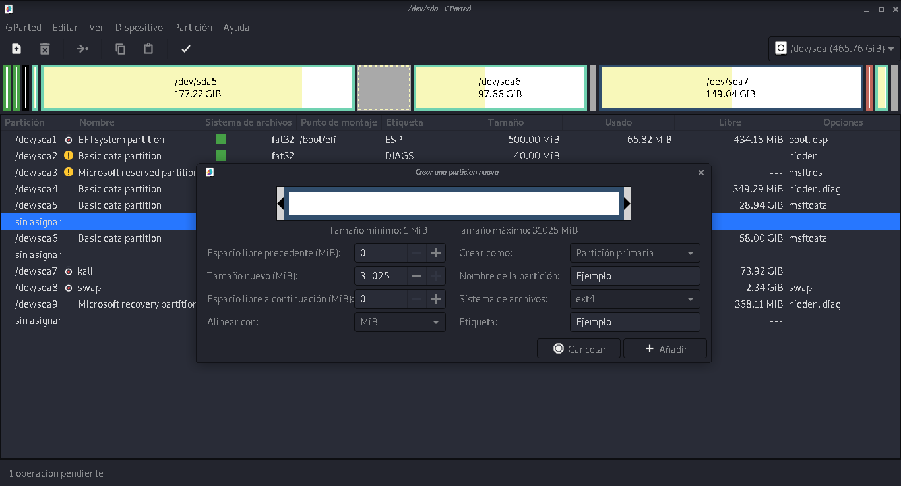
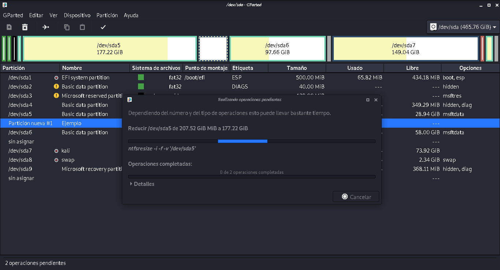
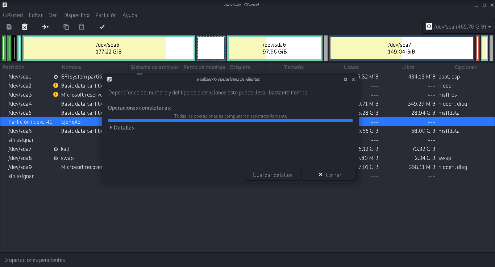
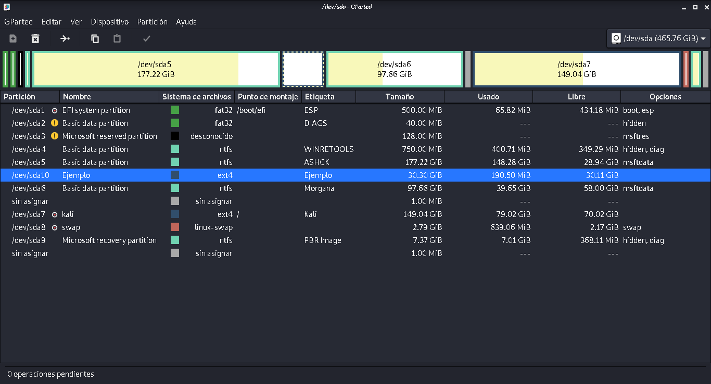

Una partición es el nombre que se le da a cada división presente en una sola unidad física de almacenamiento de datos. Para que se entienda, tener varias particiones es como tener varios discos duros en un solo disco duro físico, cada uno con su sistema de archivos y funcionando de manera diferente.
Son las divisiones primarias del disco que dependen de una tabla de particiones, y son las que detecta el ordenador al arrancar, en este tipo de particiones se instalan los sistemas operativos.
Partición secundaria:Este tipo de particion solo se puede usar para almacenar datos
Partición lógica:Este tipo de particion se hace dentro de una particion secundaria, funciona como si fueran dispositivos independientes y se utilizar para almacenar cualquier archivo
1.- Tener los datos del usaurio en una parte segura del disco por si llega a fallar el sistema
operativo
2.- Tener uno o mas sistemas operativos en el disco
1.- En caso de falla en el disco se pueden afectar las particiones
2.- Se podria generar un desgaste a largo plazo en el motor de la aguja en el disco duro
GParted es una aplicacion del sistema en linux, al abrirla nos aparecera la distribucion de particiones pre determinadas, en este caso yo ya cuento con 3 particiones primarias, dos para sistemas operativos y una para mis archivos (207.52 GB para windows, 97.66 para mis archivos, y 140.04 para el sistema Kali linux)
¿Como se crea una partición?
1.- Se comienza con seleccionar el volumen que se debe reducir, en este caso hare mas
pequeño el disco para windows (sda5), por lo que daremos click derecho sobre ella y despues en
redimensionar

2.- Abrira esta ventana donde lo que debemos cambiar es "Espacio libre a continuacion"

Al seleccionar un tamaño, la barra superior habra cambiado de tamaño
Lo que creara una particion vacia entre el sd5 y el sda6
En este caso usare los valores predeterminados para que linux pueda accesar a el sin problemas
Nos mostrara un dialogo para confirmar y aplicamos los cambios, con lo que se aplicaran los cambios como acontinuacion
Al terminar mostrara el siguiente dialogo
Y listo ha terminado y ahi podemos ver la particion
